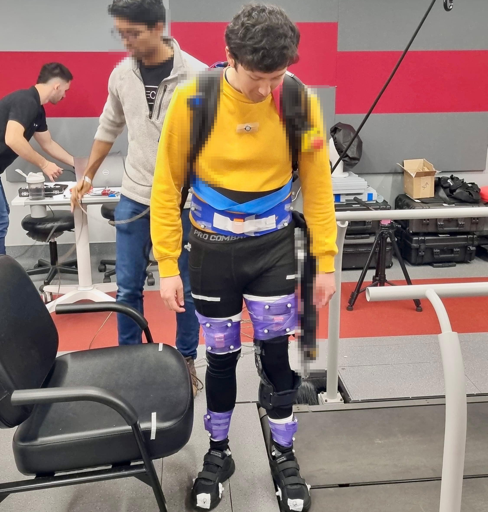
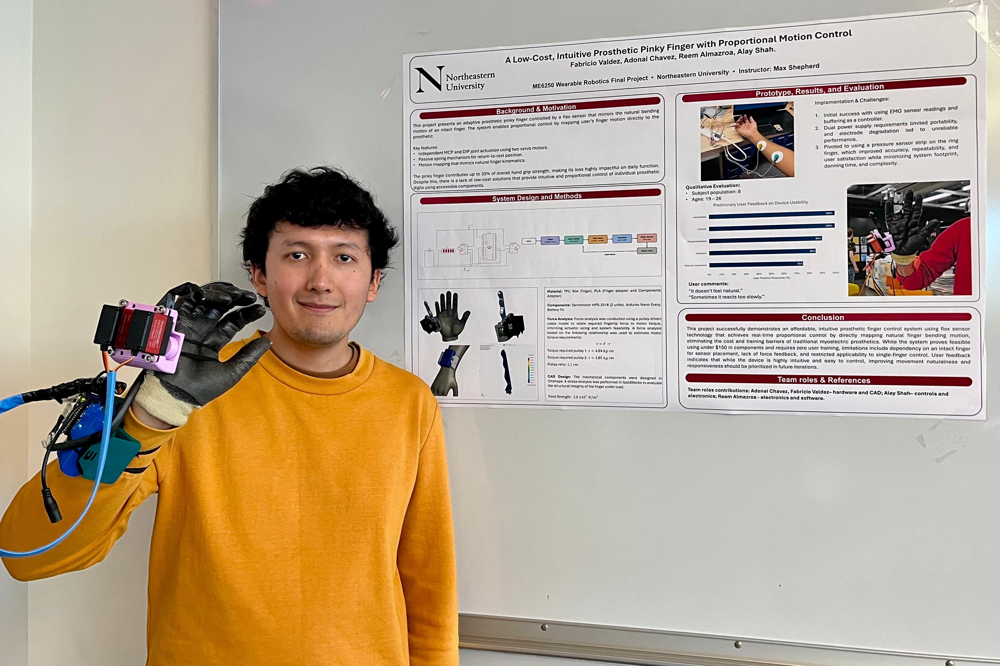
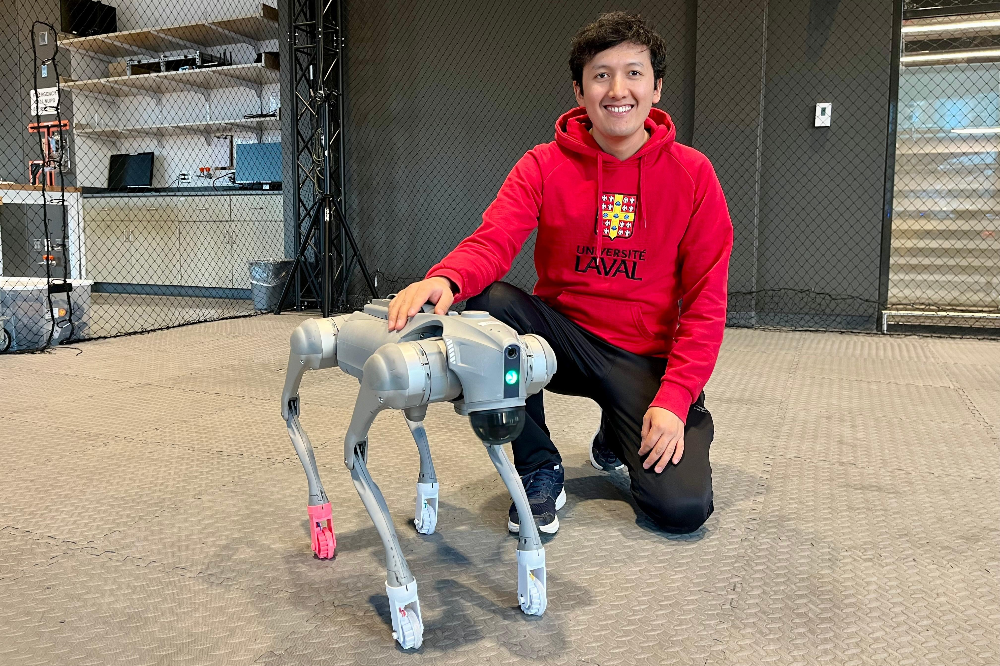
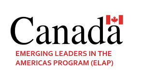

Mechatronics & Robotics Engineer · Exoskeletons & Assistive Devices
I design the mechanics, electronics, and control systems that let robots and exoskeletons work alongside the human body. I'm currently deepening that focus through the EU4M Erasmus Mundus Master's in Mechatronic Engineering.
About
I grew up in Bolivia chasing math and physics competitions, which is what first pointed me toward engineering. That path led to a Mechatronics degree, a research year at Université Laval in Quebec designing automation and instrumentation systems for a research lab, and a Fulbright-funded master's at Northeastern University, where I worked on a knee exoskeleton with a neuromotor recovery lab at Boston University.
What connects all of it: I like the point where mechanics, electronics, and control systems meet the human body — exoskeletons, prosthetics, and assistive robots most of all. I'm now continuing that focus through the EU4M Erasmus Mundus Master's in Mechatronic Engineering — year one at the Universidad de Oviedo, year two at ENSMM in France — based for now in Gijón, Spain.
- NowEU4M Erasmus Mundus Master's
- Prior degreeMS Electrical & Computer Eng. (Fulbright)
- UndergradBS Mechatronics Eng., Bolivia
- Core toolsC++, Python, ROS, MATLAB
- CAD / simSolidWorks, Fusion 360, Onshape
- FocusExoskeletons & assistive robotics
- LanguagesES (native) · EN (TOEFL 94) · FR (B2) · DE (A1)
Work Experience
Research Assistant — Knee Exoskeleton Biomechanics
2024–26- Instrumented a customized assistive knee exoskeleton with motion-capture markers and force sensors to quantify joint kinematics and kinetics during gait.
- Processed and analyzed biomechanical data (joint angles, torque, ground reaction forces) to evaluate device performance against baseline gait metrics.
- Coordinated testing protocols with physiotherapists and lab staff to translate clinical requirements into measurable engineering criteria.
Research & Instrumentation Engineer
2022- Designed and built a closed-loop temperature and humidity control system for a neonatal research chamber, including sensor selection, PID tuning, and enclosure design.
- Calibrated and maintained an oxygraph, an electrophysiology perfusion rig, and a multiplex protein-detection system, resolving signal-noise issues introduced by static charge.
- Prototyped a bio-photovoltaic energy-harvesting circuit and wrote automation software to manage lab equipment and rodent-housing operations.
Electronic Maintenance Lead, Micromobility Fleet
2021- Directed a team of 5 interns performing electronic diagnostics, battery-system checks, and repairs across a fleet of e-scooters and electric motorcycles.
- Maintained the IoT telemetry dashboard tracking vehicle status, location, and battery health for the public micromobility service.
Exoskeleton Electronics, Undergraduate Research
2019- Designed and wired the sensor and actuator electronics for an early lower-limb exoskeleton prototype, including motor drivers and control circuitry.
- Integrated embedded control logic to coordinate actuation with mechanical structure for improved user mobility.
Projects

Biomechanics Assessment of a Knee Exoskeleton
2024–26- Set up motion-capture and force-plate instrumentation to measure joint angles, torque, and ground reaction forces during exoskeleton-assisted gait.
- Built the data-processing pipeline to convert raw kinematic/kinetic signals into biomechanical metrics used to score device performance.
- Defined testing protocols with physiotherapists to align engineering measurements with clinical assessment criteria.

Intuitive Prosthetic Pinky Finger
2025- Designed a low-cost prosthetic pinky finger with independent MCP and DIP joint actuation, driven by two HPS-2518 servos through a pulley-cable transmission, plus a passive spring for return-to-rest.
- Ran a force analysis relating fingertip force to motor torque to size the actuators; modeled and stress-tested the TPU/PLA components in Onshape and SolidWorks.
- Iterated the control input from EMG electrodes to a pressure sensor strip, improving accuracy and repeatability while cutting system complexity.

Assistive Wheels for a Quadruped Robot
Report pending- Full write-up on the way — send me the project report and I'll fill this in with real technical detail.
Lower-Limb Exoskeleton Mechanical Design
Report pending- Full write-up on the way — send me the project report and I'll fill this in with real detail and photos.
Skills & Tools
| No. | Item | Category |
|---|---|---|
| 01 | C++, Python | Programming |
| 02 | ROS | Robotics middleware |
| 03 | SolidWorks, Fusion 360, Onshape | Mechanical CAD |
| 04 | Proteus, LTSpice | Circuit design & simulation |
| 05 | MATLAB | Modeling & data analysis |
| 06 | AWS IoT | Connected devices |
| 07 | Cross-disciplinary teamwork | Working with clinicians & physiotherapists |
| 08 | Leading without formal authority | Team & project leadership |
| 09 | Technical communication | Explaining complex systems simply |
Education
MSc Mechatronic Engineering
Two-year joint degree across the EU4M consortium, integrating mechanics, electronics, and control systems. Second year focused on mechatronics, robotics, and micro-mechatronic systems at ENSMM.
MS, Electrical & Computer Engineering
Includes the Gordon Institute of Engineering Leadership program, with a challenge project on knee exoskeleton biomechanics run alongside Boston University's Neuromotor Recovery Laboratory.
BS, Mechatronics Engineering
GPA 3.46/86.5% — top of cohort, recognized with the university's Academic Excellence award. Fully funded by the Simón I. Patiño Foundation scholarship.
Recognition

Erasmus Mundus Scholarship — EU4M
Funds the EU4M Joint Master's in Mechatronic Engineering across European partner universities.

Fulbright Scholarship
Funded MS studies in Electrical & Computer Engineering at Northeastern University.

ELAP Scholarship
Government of Canada award funding a research placement at Université Laval.

Academic Excellence Award
Top average of the Mechatronics Engineering cohort, Universidad Católica Boliviana.

NASA Space Apps Challenge
National winner in Bolivia; represented the country in the international round.

Simón I. Patiño Scholarship
One of five students nationwide awarded with a fully funded undergraduate degree.

Youth Ambassadors Scholarship
US Embassy leadership program, Washington DC and Pittsburgh.
Journey
Youth Ambassador, US Embassy
Selected as one of Bolivia's representatives for a leadership program with short courses in Washington DC and Pittsburgh — my first real exposure to working across cultures.
Simón I. Patiño Scholarship & NASA Space Apps win
One of five students nationwide awarded a full undergraduate scholarship. The same year, my team took first place in Bolivia at NASA's Space Apps Challenge and went on to compete internationally.
Mechatronics Engineering, Universidad Católica Boliviana
Graduated with the top average in my cohort (GPA 3.46/86.5%). Built an exoskeleton's electronics as an undergraduate researcher and started volunteering with Pequeinnova, teaching electronics to kids in underserved communities.
Led an electronics team at Trippy Mobility
Managed 5 engineering interns maintaining a fleet of e-scooters and motorcycles, and kept the IoT dashboard running for a public micromobility service in Bolivia.
ELAP Scholarship — Research at Université Laval, Quebec
Eleven months building and calibrating lab instruments at the IUCPQ research center, with a focus on automation, control, and sensing systems.
Fulbright Scholar — Northeastern University, Boston
MS in Electrical & Computer Engineering. Through the Gordon Institute of Engineering Leadership, ran a biomechanics project on a customized knee exoskeleton with Boston University's Neuromotor Recovery Laboratory.
MSc Mechatronic Engineering — EU4M Erasmus Mundus
Continuing my focus on sensing, actuation, and control for robotic systems — year one at Universidad de Oviedo, year two at ENSMM in France.
What people say
Fabricio faced early constraints on his exoskeleton project, but instead of waiting, he built relationships with lab leadership and peers and earned the trust needed to move the work forward — leading, as I put it, "from the middle."
Every device in my lab became a source of extreme curiosity for Fabricio, who worked through each one from the biological, electrical, and mechanical angles — and did it with the communication skills to explain any of it clearly to a lay audience.